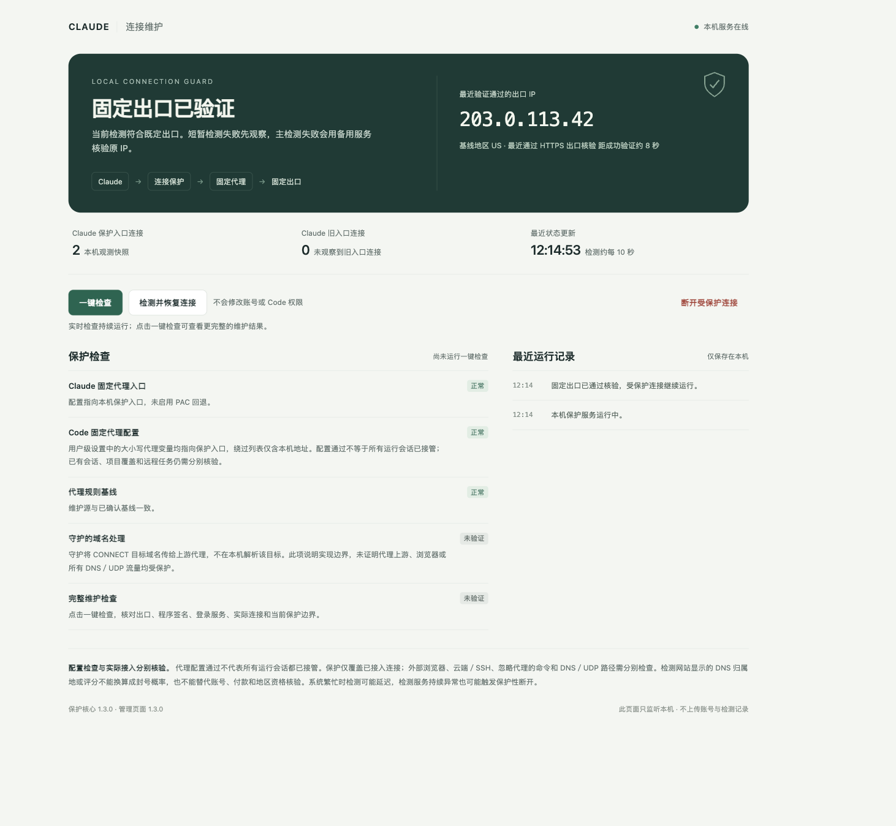

CLAUDE SHIELD / INTERFACE

✳ SU HONGSHUO 个人网站
很高兴，在这里遇见你。
AI 产品经理AI PRODUCT MANAGER
这里收录我的公开项目和产品思考。
关于我在关注什么、尝试什么，以及正在做什么。
✳ 01 / ABOUT ME
THE PERSON BEHIND THE PRODUCT
关于我
一名 AI 产品经理，
用具体的作品，记录自己的探索。
我把这个网站当作一份持续更新的个人档案：放下做过的项目，留下对产品的思考，也让新的想法有一个生长的地方。
你可以从下面的公开项目了解我的实践，也可以阅读产品手记，看看我如何思考需求、体验与交付。
从作品认识我✳ 02 / SELECTED PROJECT
LESS TALK. SOMETHING YOU CAN SEE.
项目实践
我的 GitHub 公开项目。
从界面、源码和说明，了解产品本身。

界面来自公开仓库，使用隔离演示数据，不代表真实网络状态。项目仅保护实际接入的连接，不承诺账号免于封禁。功能与边界 ↗
✳ 03 / PRODUCT NOTES
IDEAS IN PROGRESS
产品手记
保持好奇，也保持判断。
从问题出发，持续思考。
✳ 04 / FIND ME
继续了解我